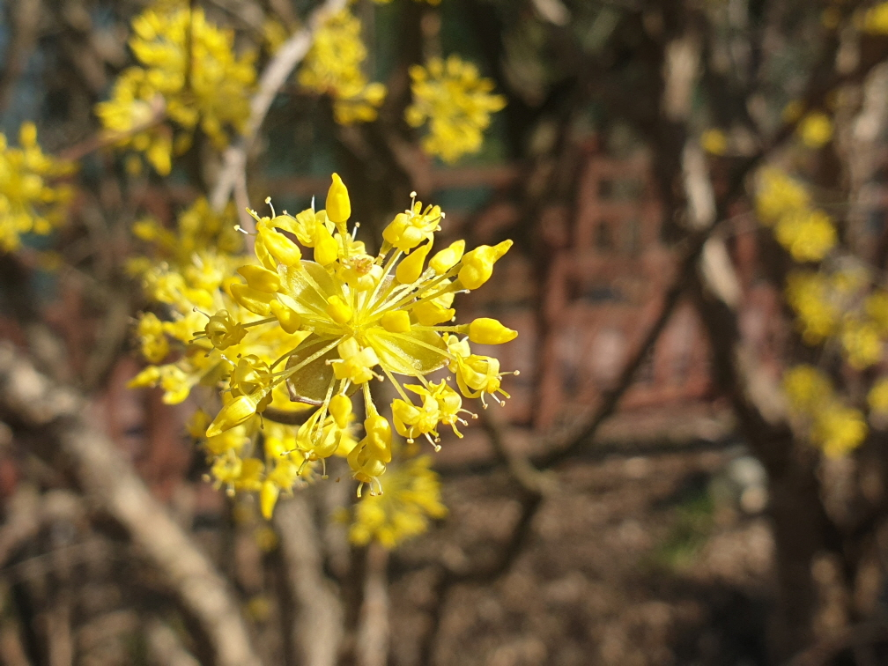

KNPS
Home
(current)
Profile
생물자원
탐방수요예측
공지사항
GitHub
국립공원연구원
Start To Predict
Korea Nationl Park Service
국립공원이란 무한 희생을 강요당한 자연에게 배려한 최대한의 공간이자, 자연의 결정권을 인정해주는 최소한의 공간임.
Start To Predict
Start To Predict
Previous
Next
국립공원이란 ?
국립공원이란 무한 희생을 강요당한 자연에게 배려한 최대한의 공간이자, 자연의 결정권을 인정해주는 최소한의 공간임.
KNPS's 경영이념
자연주권
국토의 핵심보전지역인 국립공원에 대한 무분별한 개발압력에 보존 우선의 확고한 관리원칙으로 대응함으로써 국토자존을 회복하고 국립공원의 새로운 발전과 도약의 기반을 구축
온전히 보전된 자연만이 국민의 행복한 미래를 담보할 수 있음.
미션인 ‘자연보전’과 ‘행복한 미래’ 반영
국민긍지
국립공원은 개인이 사유화할 수 있는 공간이 아니며, 누구나 쾌적한 자연환경에서 건강하고 여유 있는 생활을 누려야할 공간임.
멸절의 위기로 내몰린 자연이 자유롭게 다시 번성하는 자연주권이 확보된 온전한 국립공원에 대하여 국민 모두가 당당한 긍지를 가지며, 이와 함께 국립공원이 주는 자연의 혜택을 향유한다는 의미임.
미션인 ‘건강하고 행복한 미래’, 국정철학인 ‘국민이 주인인 정부’ 반영
소통공감
국립공원을 지켜내는 일은 국민과 미래를 위한 행복한 세상을 만들어 가기 위한 소명임. 이를 이루기 위해서는 조직의 활력을 위해 뜻과 생각의 자유로운 수평적 소통문화가 필요하며, 지역주민 등 이해관계자와 공감하는 동반자적 관계가 구축되어야 함.
자연을 지키는 것에 대하여 국민과 함께 소통‧공감한다면, 자연과 인간이 공존하고 더불어 행복한 국립공원의 미션을 달성할 수 있음.
비전인 ‘자연‧사람‧미래 연결’, 국정철학인 ‘국민이 주인인 정부’ 반영
